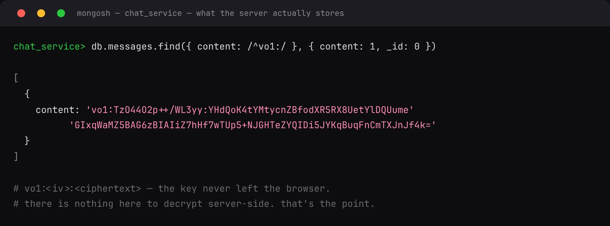

Features / End-to-end encrypted direct messages
End-to-end encrypted direct messages
BackendECDH key exchange → AES-GCM, entirely in the browser. The server stores vo1:<iv>:<ciphertext> and nothing else — even a database dump reveals no message content.
- Honest trade-off: this covers DMs, not channels — channels still feed search and the AI assistant.
- Known limits, stated plainly: one device per key, no forward secrecy, trust-on-first-use.
- Identity is decided once, at the gateway — every downstream service trusts a header only the gateway can set.
